Intro Bio I (B0160) - Módulo de Evolución
Pero queda una pregunta:
¿De dónde provienen las nuevas variantes genéticas?
La selección natural requiere:
Sin embargo, Darwin no conocía el mecanismo de la herencia.
Los experimentos de Mendel mostraron que:
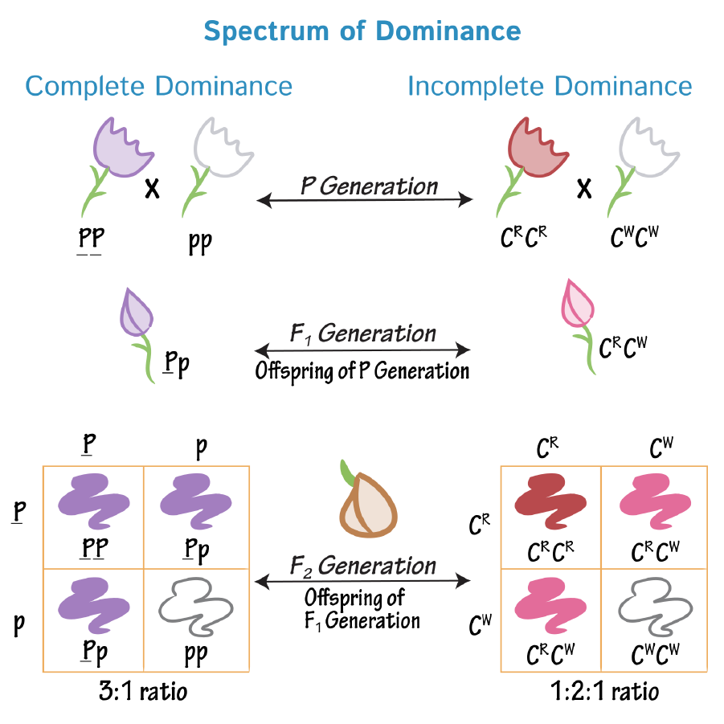
Esto resolvió uno de los principales problemas de la teoría de Darwin: ¿cómo se mantiene la variación a lo largo del tiempo?
Mendel trabajó principalmente con rasgos:
Por ejemplo:
Muchos rasgos biológicos muestran variación continua:
A finales del siglo XIX no estaba claro cómo la herencia mendeliana podía producir este tipo de variación.
Puente conceptual clave entre genética, la variación cuantitativa, y la evolución. El inicio de genética cuantitativa.
Observaban rasgos como:
La herencia es particulada y discreta.
Medían rasgos como:
La variación observada es continua.
Si la herencia es discreta, ¿por qué muchos rasgos se ven continuos?
| Genotipo | Contribución a estatura |
|---|---|
| AA | Alta |
| Aa | Intermedia |
| aa | Baja |
Aparecen tres categorías claras.
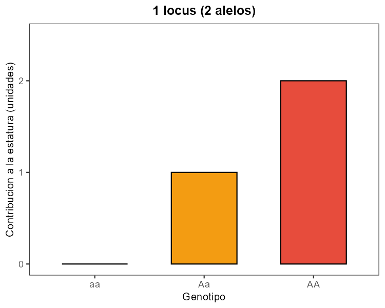
| Locus 1 | Locus 2 |
|---|---|
| A/a | B/b |
Si cada alelo mayúscula aporta +1 unidad, tendramos genotipos con 0, 1, 2, 3 o 4 unidades.
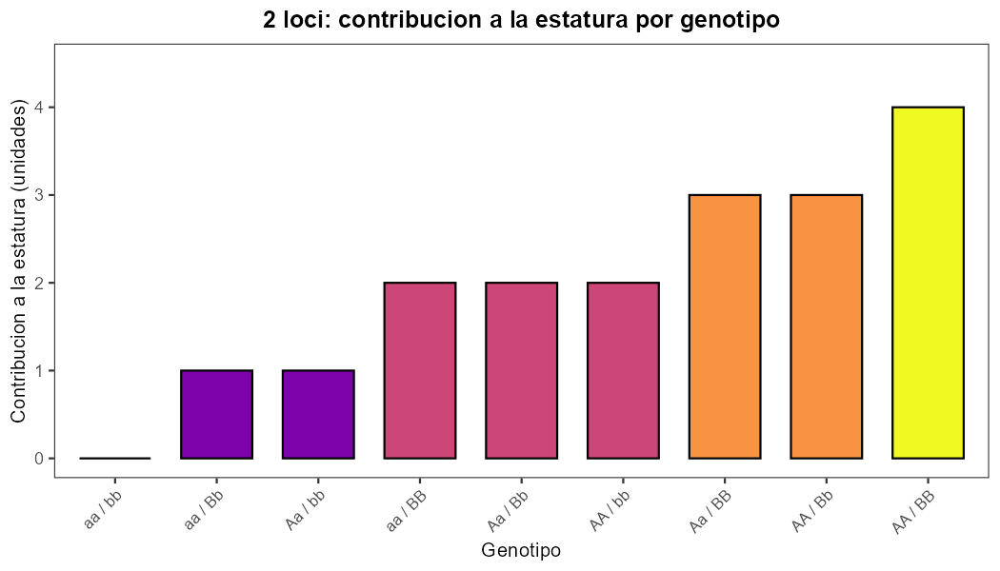
Ahora agregamos un efecto de interacción genotipo por ambiente (GxE):
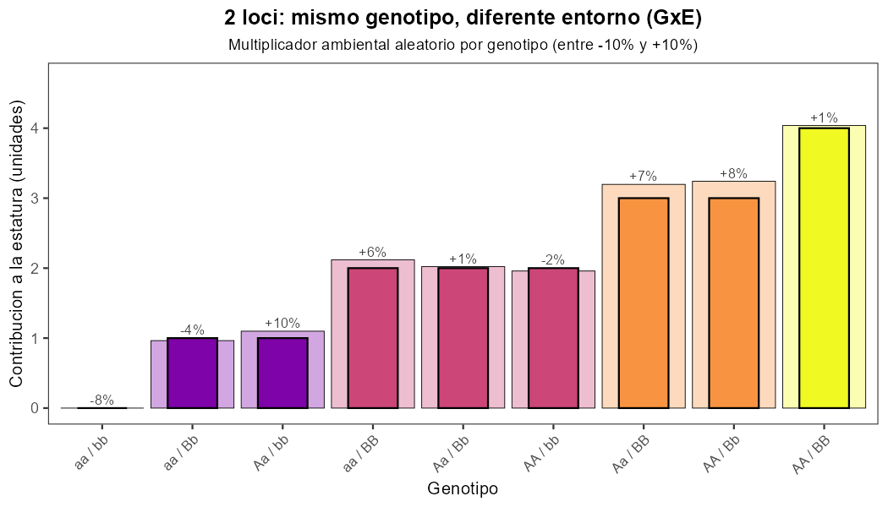
Al agrupar genotipos por su contribución total, vemos una distribución por frecuencias.
Este paso conecta genotype-by-genotype con patrón poblacional.
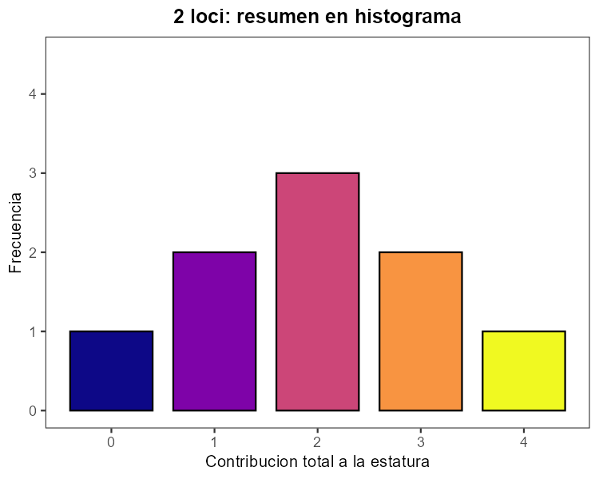
Con muchos individuos, la distribución de fenotipos empieza a tomar forma de campana.
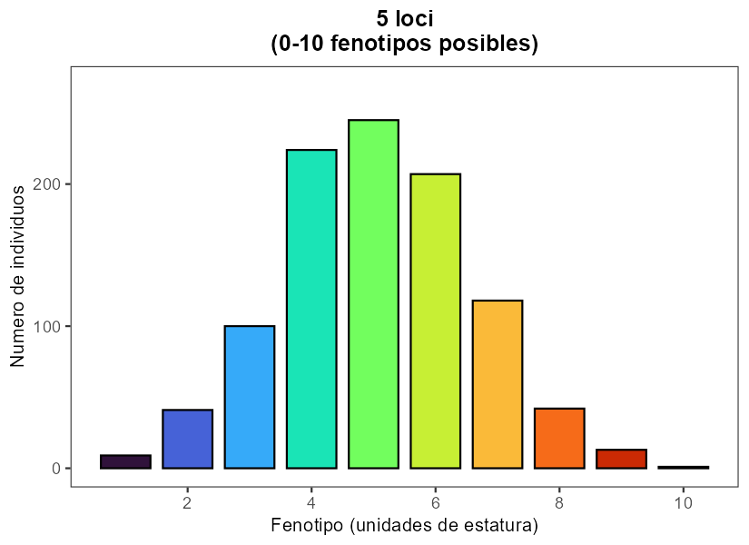
Aumentar loci incrementa el número de combinaciones genéticas y densifica el continuo fenotípico.
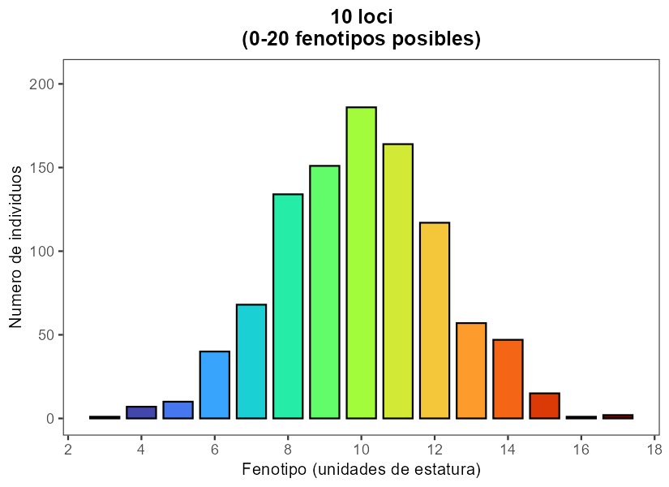
Con más loci, el patrón poblacional se acerca aún más a una distribución continua.
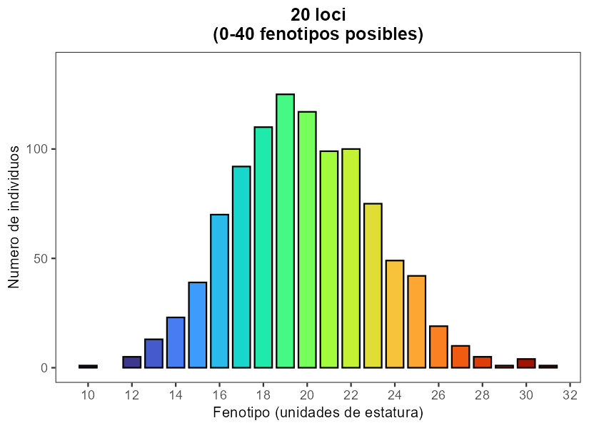
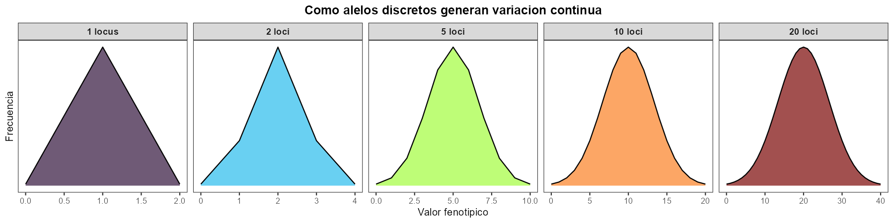
Resumen:
Mendel explicó cómo se transmiten variantes existentes.
Fischer explico cómo la herencia poligénica puede generar variación continua.
Pero seguía faltando una explicación para:
¿Cómo surgen nuevos alelos?
A principios del siglo XX, Morgan observó la aparición espontánea de nuevas variantes hereditarias en moscas de la fruta.
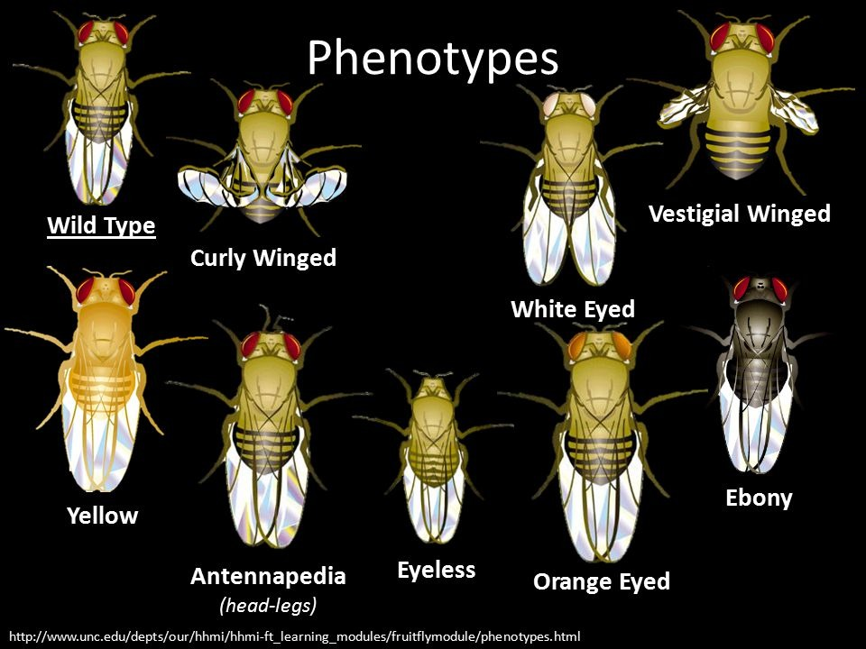
Estas variantes:
Una mutación es:
Un cambio heredable en la secuencia del ADN.
Las mutaciones generan nuevos alelos que pueden transmitirse a generaciones futuras.
La mutación:
La selección natural:
No.
La secuencia correcta es:
Mutación → Variación → Selección
La seleccion natural actua sobre el fenotipo, no sobre la mutación o el genotipo.
Cada vez que una célula copia su ADN pueden ocurrir errores.
La mayoría son corregidos.
Algunos permanecen y se convierten en mutaciones.
Ejemplos:
Importante:
Los mutágenos aumentan la frecuencia de mutaciones, pero no las dirigen hacia lo que el organismo necesita.
No.
Las mutaciones pueden ser:
Cuando surge una nueva mutación:
La mayoría de las mutaciones nuevas generalmente son muy raras
Las mutaciones pueden organizarse en dos grupos:
Afectan pocos nucleótidos.
Incluyen:
Pueden alterar un codón, varios codones o el marco de lectura.
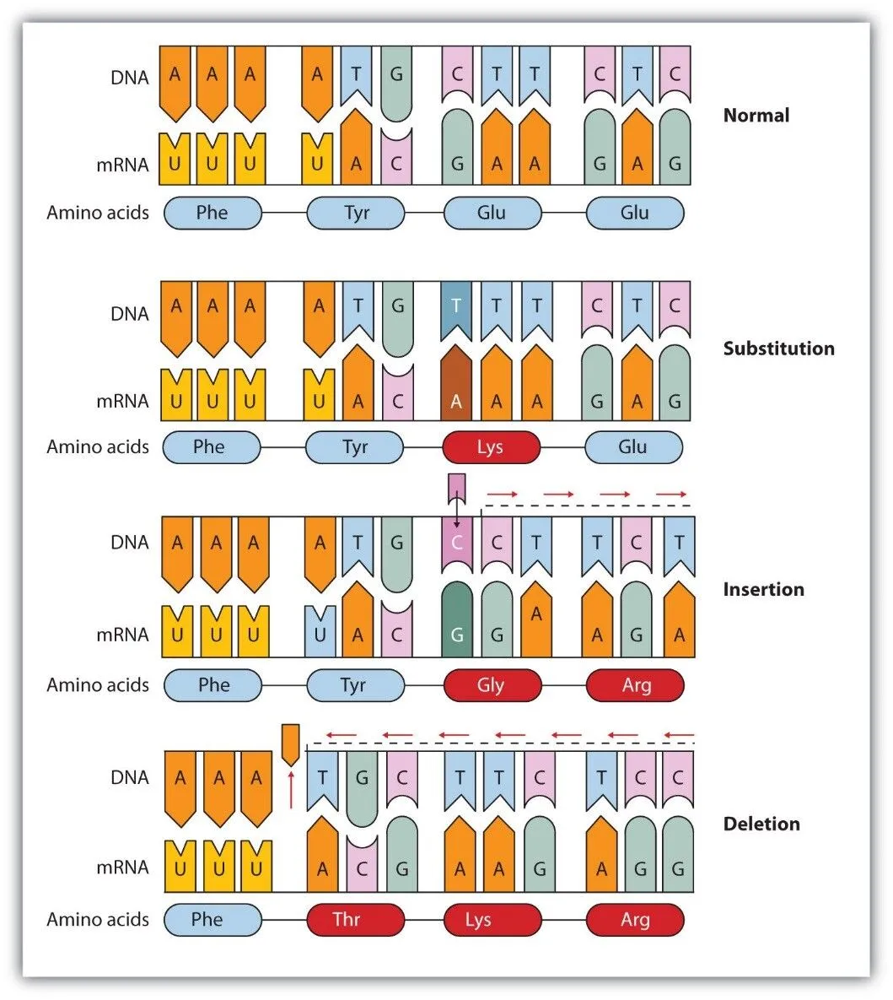
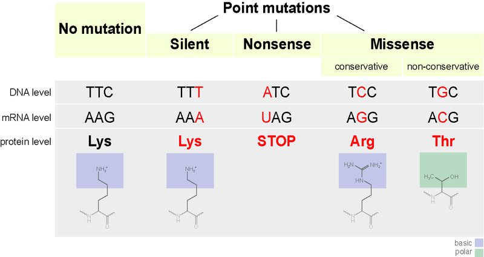
Si la inserción/deleción no es múltiplo de 3:
Si es múltiplo de 3:
Afectan segmentos grandes o cromosomas completos.
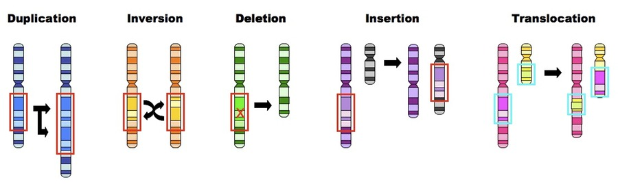
No todos los tipos de mutación aportan el mismo “material” para evolución.
Una duplicación crea dos copias del mismo gen. A partir de ahí, hay varios destinos:
Las duplicaciones abren espacio para innovación evolutiva sin perder de inmediato la función original.
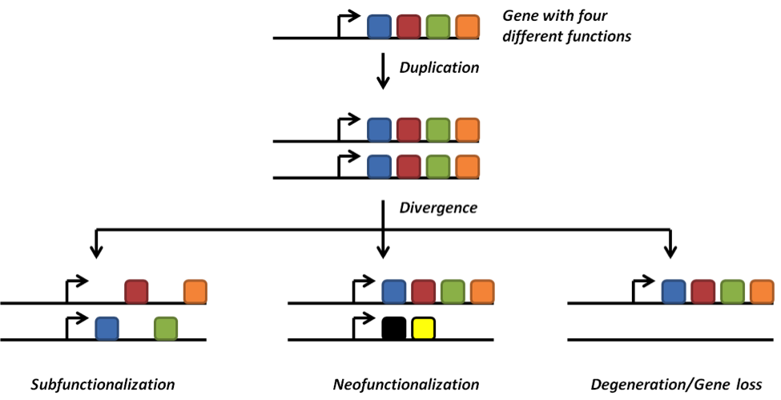
Ejemplos:
- globinas (hemoglobina y mioglobina) surgieron por duplicación y neofuncionalización.
- fetal vs adulto: hemoglobina fetal tiene mayor afinidad por oxígeno que la adulta, lo que es crucial para el intercambio de gases en el útero.
- proteínas antifreeze en peces antárticos surgieron por duplicación y neofuncionalización de un gen de rol digestivo.
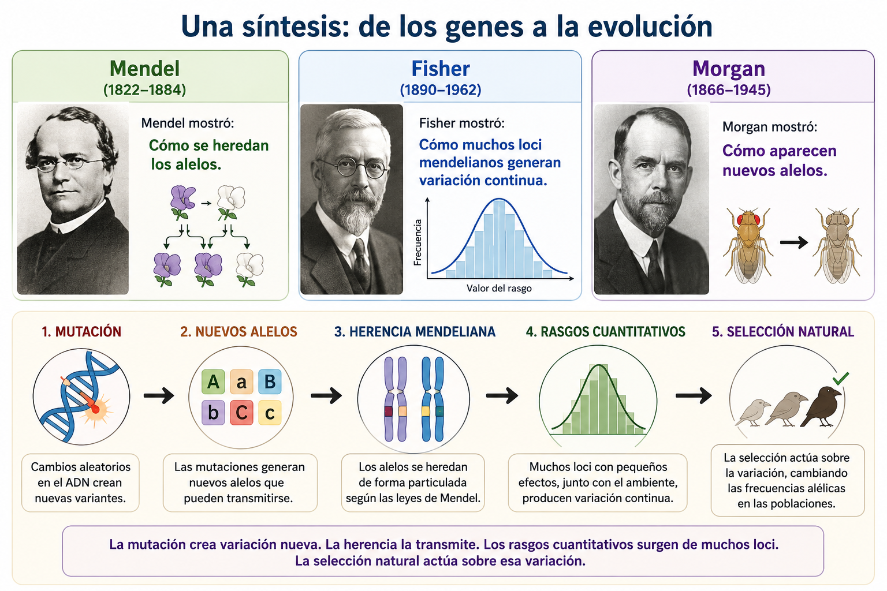